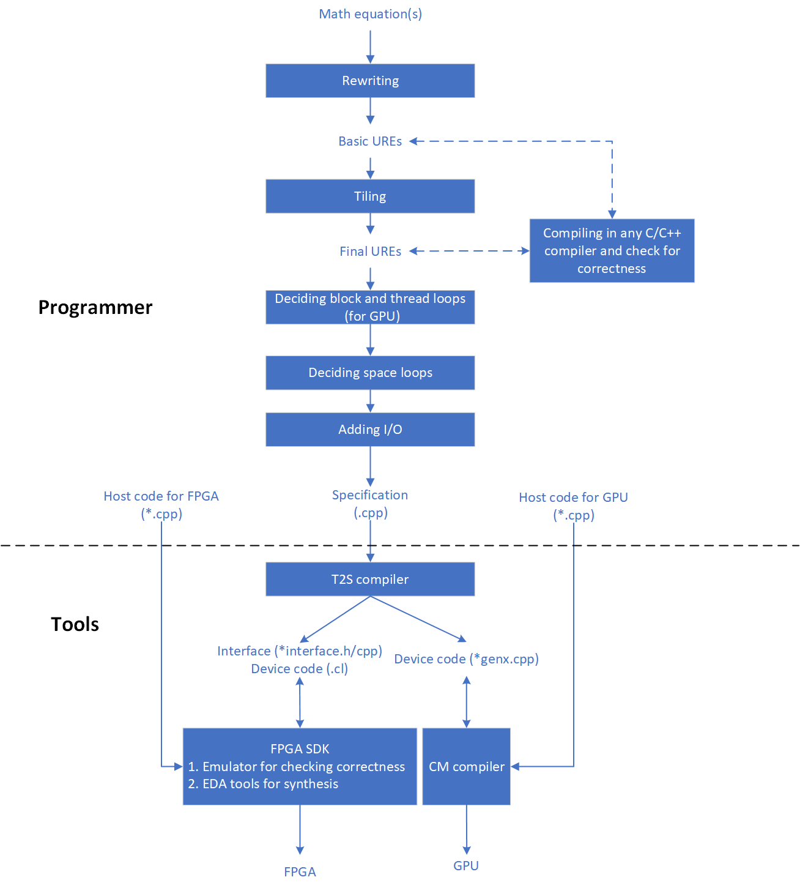
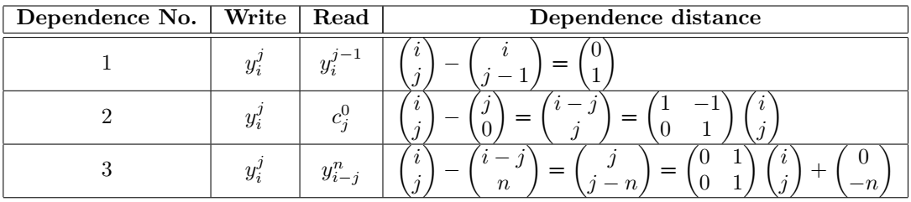
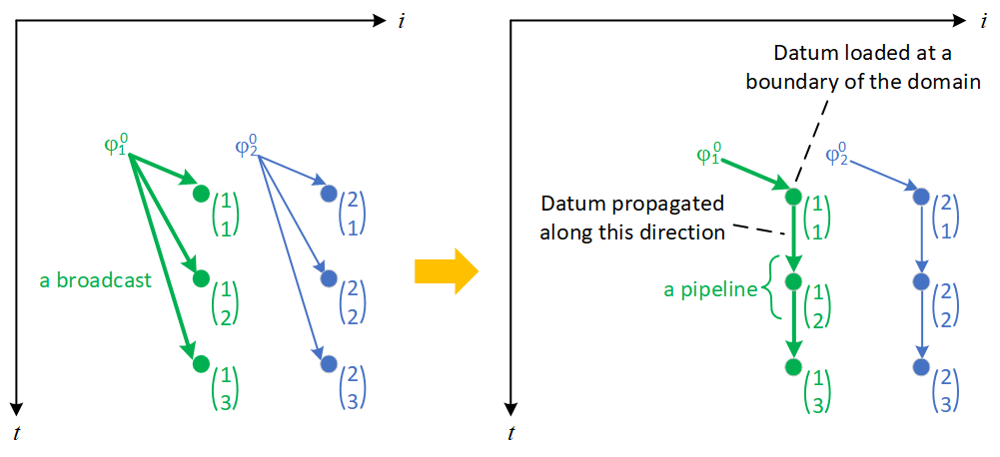
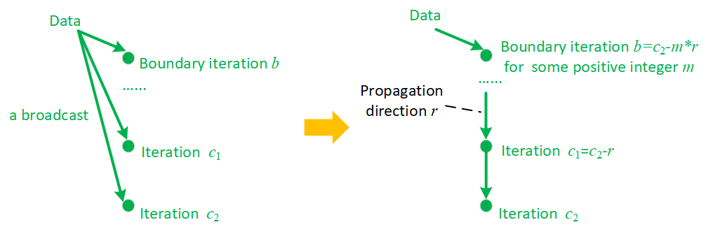

T2SP generates accelerators for dense tensor computes. Usually, such a compute is described as one or a few math equations. We can rewrite these equations to be recursive, the so-called Uniform Recursive Equations or UREs. With UREs, we can accurately control input and output data to flow in a pipeline fashion during the compute.
We can write basic UREs without tiling the compute domain. Then we tile the compute domain for data locality and reuse. It is straightforward to translate basic UREs into the final UREs after tiling.
Note that UREs are simply C statements. So after adding some helper code necessary for testing, we can compile them in any C compiler, print out the results, and check if the UREs are correct vs. the original math equations.
The compute domain is iterated with a loop nest. If the compute is to run on a GPU, we need decide which loops are block loops, and inside a block, which loops are thread loops: An iteration of the thread loops will be turned into a thread. If the compute is to run on an FPGA, however, we always use a single thread for the entire compute, and thus there is no block and thread loops.
Inside a thread, we will build a systolic array in a space-time transform. So we need decide which loops are space loops.
Finally, we add an I/O network for the systolic array. The I/O network is composed of multiple memory levels. The input/output data are loaded/unloaded through the I/O network into/out of the systolic array. Inside the systolic array, the data flow according to the UREs.
Now for the original compute, we have a complete T2SP program, or more accurately, a specification, since such a program only specifies what to implement (e.g. space-time transform and I/O network), but leave the actual implementation to the T2SP compiler. In other words, the program controls the compiler to generate the expected accelerator.
For an FPGA, the T2SP compiler generates OpenCL device code and a C interface, compile and run these generated code by invoking the downstream FPGA tools. The programmer can use the emulator tool to verify correctness of the generated code, and use the synthesis tool to produce a bit-stream. The programmer can write CPU host code and call the device code through the C interface, just like calling any normal C function on a CPU. That call would offload the compute to the emulator or an actual FPGA to run.
For a GPU, the T2SP compiler generates CM device code, and invoke the CM compiler to build a binary. The programmer need write CPU host code that offloads the device code to a GPU.
A beginner might encounter several hurdles in using T2SP: (1) how to write UREs? (2) how to tile loops? (3) how to decide block, thread, and space loops? and (4) how to design I/O? There are numerous valid answers for each of these questions. Fortunately, we do not have to be mathematicians, algorithm experts, or computer architects in order to effectively address the questions. Based on simple and intuitive rules, any programmer may master the programming quickly, and use the skills to accelerate real-world workloads.
We will describe the steps in more details below.

Based on the work of Gusev and Evans [1][2], we can translate math equations into UREs, following the simple steps below. Going through an example, we would find that this process is pretty much mechanical and intuitive, and only middle-school level of math knowledge is needed. So do not be scared by the math symbols. We strongly recommend a beginner repeats the steps of an example, during which the beginner would quickly master the skills. These skills are applicable to other real world problems, not limited to the examples here.
Use auto-regressive filter for example:
figure is here {Fig. ¿fig:deriving-ures-for-auto-regressive-filter?}
First, write down the math equations of the original problem. Usually, these equations are to iterate over a domain (like j = 1, ..., n) and compute some variables (like yi).
table tbl. ¿tbl:deriving-ures-for-auto-regressive-filter? is here
Translate the iterative form to recursive form is straightforward: figure out the initial value of a variable (e.g. yi = xi), and update the variable every iteration with a new value based on its previous value (e.g. yi = yi + ...).
Every iteration, assign a variable to a distinct memory location. Every writing to a variable (and correspondingly, every reading of the variable) are indicated by the iteration index. For example, in iteration j, yi = yi + ...yi − j is changed into yij = yij − 1 + ...yi − jn. After such renaming, the iterations where y are assigned values are clearly exposed. Consequently, the dependences between these iterations are made explicit.
For another example, the initial condition yi = xi is changed into yi0 = xi: iteration index j starts from 1 in this example, and therefore, yi0 is the yi before iteration j starts. In general, if iteration index j starts from s and has a step h, the initial condition should be yis − h = ....
Now variables are referenced with full indices, but constants are not: cj and xi are input values, never modified during the iterations. Give them full indices as well by adding 0’s: cj and xi are changed into cj0 and xi0. After this, variables and constants will be processed in the same way.
At this point, the equations we get are AREs (Affine Recurrence Equations), that is, every data flow (write after read dependence) has a distance vector in the form of d = Az + d0, where A is a matrix, z is the iteration indices, and d0 is a constant vector:

We translate AREs into UREs by converting a broadcast into a pipeline. After that, every dependence has a constant distance uniformly in the entire domain.
There are two ways to convert a broadcast into a pipeline. First, we can draw the dataflow and intuitively change a broadcast into a pipeline. Say n = 3. We can draw the dataflow for the second dependence, as shown below to the left. Every point is an iteration, and annotated with the indices (i, j). A datum (cj0) is broadcast to iterations yij for all i. Equivalently, we can send a datum to an iteration at a boundary of the domain, and from that iteration, propagate the datum in a pipeline fashion to all the other iterations, as shown below to the right.

As we can see from the dataflow graph, a datum cj0 is loaded at a bounary iteration (1,j), and then is propagated to iteration (2,j), and from there to iteration (3,j), etc. Therefore, we can modify the full index form
yij = ...cj0...
into
yij = ...Cij...
where
Cij = Ci − 1j
with an initial condition
Ci − 1j = cj0 when i=1
In the same way, we can convert a broadcast due to the third dependence into a pipeline. An exercise: Can you draw a dataflow graph and make it yourself? After that, we get the UREs shown in the above table.
Second, we can

slightly:
What is shown
In the above table, the second and third dependence are affine.
The first dependence is already uniformA uniform distance
(i,j)TABC = minimumXYZ, ZYX
There are still some
Of course, depending on the domain in a specific problem, one should
This is because the three occurences of the variable y
. new value of variable yi is assigned to a distinct memory location named yij, and its reference to a previous value of variable yi is changed to
This renaming
In the illustrated example, yi is the result of a series of additions,
here it is
// Or so
/* or so */
for (int i=1; i< 99; i++) {
int j=10;
// dkfjldjfl
//lkdfjdsf
}And after
[1] Marjan Gusev and David J. Evans. Algorithm Transformations for the Data Broadcast Elimination Method. Parallel Algorithm Research Centre. Loughborough University of Technology. Loughborough, Leicestershire LE11 3TU. Internal Report 646 Computer Department.
[2] Marjan Gusev and David J. Evans. Elimination of the Computational Broadcast : An Application to the QR Decomposition Algorithm. Parallel Algorithm Research Centre. Loughborough University of Technology. Loughborough, Leicestershire LE11 3TU. Internal Report 676 Computer Department.